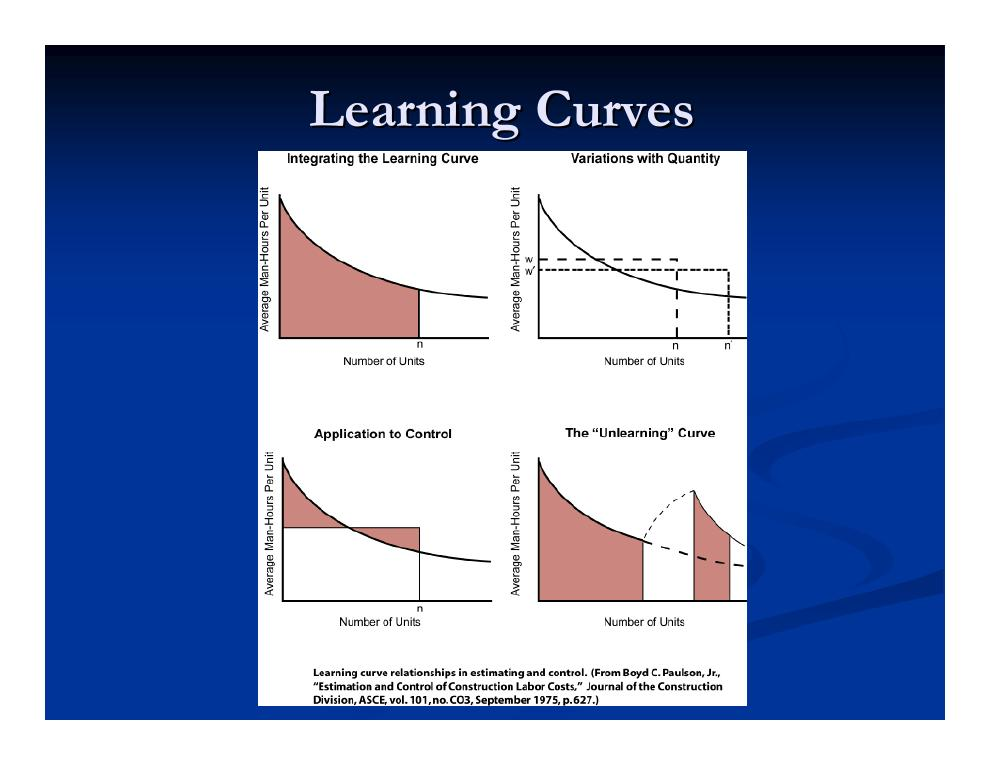
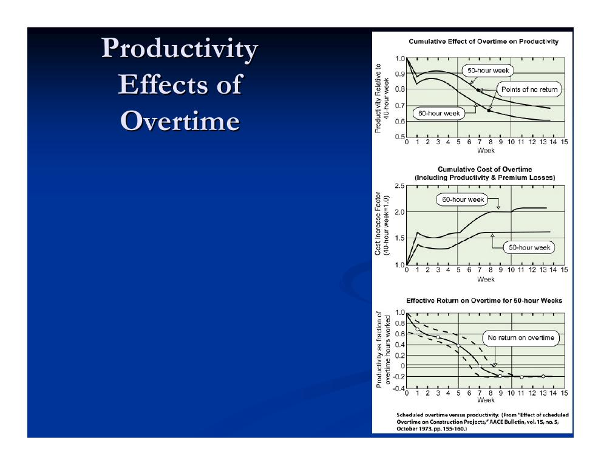
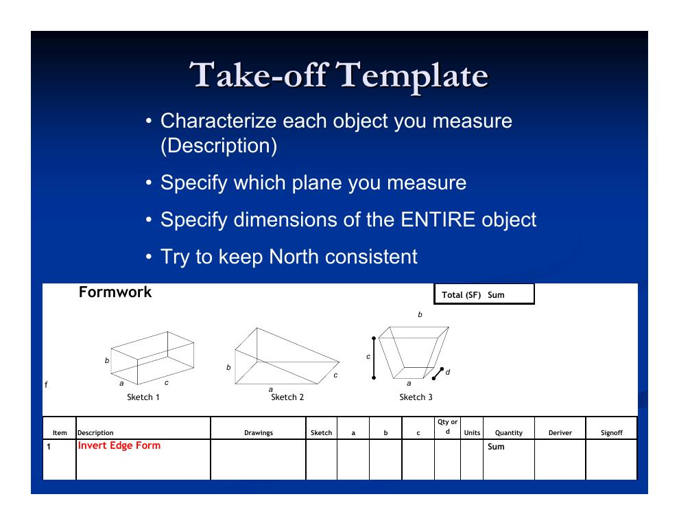

- Von der Konzept- zur Detailschätzung
- Kostenklassifikation: direkte und indirekte Kosten
- Fair-Cost-, Angebots- und definitive Schätzungen
- Mengenermittlung (Quantity Takeoff)
- Arbeitskostenschätzung: Preis und Produktivität
- Probabilistische Schätzverfahren
- Fallbeispiel Pumpstation: Aufmaß in der Praxis
- Betonierabläufe: Bodenplatte und Wand
1. Von der Konzept- zur Detailschätzung
Nachdem Kapitel 3.1 die Schätzstufen und die konzeptionellen Verfahren behandelt hat, geht es nun um die detaillierte Kostenschätzung. Sie ergänzt die Grobschätzungen, sobald die Detailplanung weitgehend oder vollständig abgeschlossen ist, und läuft in zwei Stufen ab:
- Stufe 1 – Mengenermittlung (Quantity Takeoff): Messen der benötigten Material- und Arbeitsmengen; die Mengen werden aus Steuerungsgründen üblicherweise gewerkeweise zusammengefasst.
- Stufe 2 – Ermittlung der direkten Kosten:
Einige Eigenheiten detaillierter Schätzungen sollte man kennen:
- Die Unsicherheitsspannen der einzelnen Positionen sind unterschiedlich groß; die Verteilungen sind typischerweise asymmetrisch (Überschreitungen sind wahrscheinlicher als Unterschreitungen).
- Schätzen ist eher Kunst als Wissenschaft – und mehr als Buchhaltung: Detaillierte quantitative Schätzungen sind möglich, ignorieren aber wichtige qualitative Faktoren.
- Es steckt eine Fülle gewerke- und verfahrensspezifischer Detailkomplexität darin.
- Häufig hängt die Schätzung stark von Nachunternehmerangeboten ab – deren Kalkulation ist von außen nicht einsehbar („opake“ Pauschalangebote).
2. Kostenklassifikation: direkte und indirekte Kosten
| Kostenkategorie | Bestandteile |
|---|---|
| Direkte Kosten | Lohnkosten · Materialkosten · Gerätekosten · Kleingeräte und Verbrauchsmaterial (ST&S) |
| Indirekte Kosten („Gemeinkosten“/Overhead) | Kreditzinsen · Miete für Baucontainer · Bürokosten · Klimatisierung/Heizung · Planung und Logistik · Bauleitung/Aufsicht |
Bei den Gemeinkosten lohnt eine weitere Unterscheidung:
- Projektgemeinkosten (Project Overhead)
- Projektspezifisch: Führungspersonal, Medienanschlüsse, Verbrauchsmaterial, Ingenieurleistungen, Prüfungen, Zeichnungen, Mieten, Genehmigungen, Versicherungen. Sie können und sollten direkt geschätzt werden – bleiben aber recht unsicher (Qualität der eingesetzten Bauleitung, Projektdauer usw.).
- Firmengemeinkosten (Firm Overhead)
- Zentrale Verwaltung: Gehälter, Büromiete, Nebenkosten, Versicherungen, Steuern, Werkstätten und Lagerplätze, Sonstiges. Schwer zu schätzen; meist wird ein prozentualer Zuschlag verwendet.
Die Abgrenzung ist nicht immer scharf – etwa bei sprunghaften Investitionen der Zentrale, die mehreren Projekten zugutekommen.
3. Fair-Cost-, Angebots- und definitive Schätzungen
Fair-Cost-Schätzung des Bauherrn
Die Fair-Cost-Schätzung wird aus den tatsächlichen Ausschreibungsunterlagen erstellt, die den Bietern vorliegen – noch vor der Vergabe. Nach der Vergabe nutzt der Bauherrnvertreter sie, um Nachträge zu bewerten. Merkmale:
- Als Datenbasis dienen z. B. RS-Means-Handbücher oder andere Quellen; Pauschalangebote von Nachunternehmern fließen nicht ein.
- Die Gliederung weicht etwas vom Angebot ab: teils weniger Einzelpositionen, teils detailliertere Aufschlüsselung (etwa bei Nachunternehmerleistungen).
- Sie ist die primäre Grundlage für die Messung des Baufortschritts, für die Terminplanung und für die Kostensteuerung.
Angebotskalkulation des Unternehmers (Bid Estimate)
- Ziel: niedrig genug, um den Auftrag zu gewinnen – hoch genug, um Gewinn zu machen.
- Stützt sich oft auf historische Produktivitätsdaten des eigenen Unternehmens, Intuition über das Arbeitstempo und eine Mengenermittlung der wichtigsten Positionen.
- Teils weniger detailliert als die Fair-Cost-Schätzung – Nachunternehmer decken 30 bis 80 % des Projekts ab.
- Von einem eingespielten Routineprozess kann keine Rede sein: Zwischen dem niedrigsten und dem höchsten Gebot für dasselbe Projekt liegen in wettbewerbsintensiven Regionen mitunter über 50 % Unterschied.
Definitive Schätzungen
Irgendwann lässt sich eine definitive Schätzung aufstellen, die die endgültigen Projektkosten mit geringem Fehler vorhersagt; der Restfehler wird durch eine sorgfältig bewertete Rückstellung (Contingency) aufgefangen. Wann dieser Zeitpunkt erreicht ist, hängt vom Abwicklungsmodell ab:
| Abwicklungsmodell | Definitive Schätzung |
|---|---|
| Traditionell (Design-Bid-Build) | Beim Pauschalpreis: definitive Schätzung = Angebot des Billigstbieters + bewertete Contingency. Bei Fast-Track mit GMP oder Cost-plus-Fee braucht es: detaillierte Pläne und Leistungsbeschreibungen, feste Materialangebote, Nachunternehmerangebote und Preise der Großausrüstung. |
| Design-Build | Ein Pauschalpreis kann einen unerfahrenen Bauherrn täuschen: Die Kosten stehen fest, aber welches Gebäude geliefert wird, nicht. Bei GMP- und Cost-plus-Fee-Verträgen liegt die definitive Schätzung früher vor als im traditionellen Modell, weil Planung und Ausführung in einer Hand liegen. |
| Professionelles CM | Die definitive Schätzung gelingt etwa zum gleichen Zeitpunkt wie bei GMP/Cost-plus-Fee im traditionellen Modell; Beispiele zeigen, dass sie ab etwa 95 % fertiger Detailplanung möglich ist. |
| Einheitspreisvertrag | Typisch für Tiefbau-Großprojekte (Dämme, Tunnel, Autobahnen, Flughäfen): Die Preise stehen fest, die Mengen schwanken naturgemäß – Mehr- oder Mindermengen etwa durch zusätzliche Gründungen, Aushub bis zum anstehenden Fels oder schlechten Baugrund. Ohne verlässliche geologische Informationen sind die Endkosten unter Umständen erst am Projektende genau bekannt. |
4. Mengenermittlung (Quantity Takeoff)
Die Mengenermittlung ist die systematische Erfassung aller benötigten Material- und Arbeitsmengen – und sie erfordert echtes Nachdenken! Zwei Schlüsseleigenschaften muss die Gliederung erfüllen: Sie muss vollständig (nichts vergessen) und überschneidungsfrei (nichts doppelt) sein. Aus den Mengen werden mehrere Größen abgeleitet: Materialmengen (z. B. Kubikyards Beton), Geräteeinsatz und Arbeitsstunden. Die Gliederung folgt oft der CSI-Systematik oder dem Projektstrukturplan (Work Breakdown Structure, WBS).
Feinheiten der Mengenermittlung
- Verfahrensbedingte Elemente: Manche Positionen entstehen erst durch die Bauweise – z. B. Arbeitsfugen (Construction Joints) beim abschnittsweisen Betonieren.
- Wiederverwendung von Material (etwa Schalung) und Geräten hängt ab von der Leistungsbeschreibung, vom Terminplan (der selbst gerade erst geschätzt und angepasst wird) und vom Platz auf der Baustelle – beengte Verhältnisse können Parallelarbeit erschweren oder verhindern (reicht der Platz für zwei Krane? Für zwei Kolonnen?).
- Kosten und Zeit müssen gemeinsam geschätzt werden – teils iterativ, denn es gibt versteckte Abhängigkeiten der Kosten vom Terminplan.
- Schnittstellen zwischen den Beteiligten: Es passiert leicht, dass jede Partei glaubt, die andere habe eine Position übernommen – etwa die Annahme, der Aushub sei in den Einheitskosten der Rohrleitung enthalten.
- Die Wahl des Bauverfahrens hat großen Einfluss auf die Mengen; die Arbeitskostenschätzung ist besonders heikel (siehe Abschnitt 5).
- Auch die Folgen von Fehlern erster und zweiter Art unterscheiden sich: etwas fälschlich einrechnen kostet Wettbewerbsfähigkeit, etwas übersehen kostet Gewinn.
5. Arbeitskostenschätzung: Preis und Produktivität
Die Schätzung der Arbeitskosten ist der subtilste und heikelste Teil der Kalkulation. Für gute Übertragbarkeit zerlegt man sie in drei Faktoren:
Q = Menge [Einheiten] · P = Lohnpreis [$/Stunde] · W = Arbeitsstunden je Einheit [h/Einheit – der Kehrwert der Produktivität]
Lohnpreis P
Der Stundensatz setzt sich zusammen aus: Löhnen (variieren nach Region, Zuständigkeitsbereich, Seniorität), Versicherungen (abhängig von Schadenshistorie des Unternehmers und Arbeitsart), Sozialversicherung (FICA – je zur Hälfte von Arbeitgeber und Arbeitnehmer), Arbeitslosensteuer (bundesstaatlich), Lohnnebenleistungen (Ausbildung, Urlaub, Krankenversicherung …) und Lohnzuschlägen:
- Schichtarbeit: teils über angepasste Stundenzahlen abgegolten.
- Überstunden: Faktor 1,5 bis 3; manche Gewerke erhalten Überstundenzuschlag bereits ab 32 Wochenstunden.
- Gefährliche oder beschwerliche Arbeit: etwa auf Hängegerüsten, mit größeren Kranen oder unter Tage.
Die komplizierten, heterogenen Regeln und Ausnahmen in den USA – gerade in gewerkschaftlich organisierten Betrieben – machen die Schätzung aufwendiger als in den meisten anderen Branchen. Häufig kalkuliert man deshalb kolonnenbasiert: Man rechnet mit dem Preis einer Standardkolonne (Crew), was die Arbeitsregeln gleich mit einbezieht. Zwischen den Unternehmern bestehen erhebliche Unterschiede in der Handhabung.
Produktivität W
Die Produktivitätsschätzung ist schwierig, aber entscheidend – sie ist das primäre Mittel, die Arbeitskosten zu steuern, und qualitative Faktoren (Arbeitsumfeld, Moral, Ermüdung, Lernen) wiegen schwer. Historische Daten liefern das US-Arbeitsministerium, Berufsverbände und Bundesstaaten. Zu berücksichtigen sind: Lage der Baustelle (lokale Qualifikationsbasis, Regeln des Zuständigkeitsbereichs), Lernkurven, Arbeitszeitmodell (Überstunden, Schichtarbeit), Wetter (aufwendige Behelfslösungen kosten), Arbeitsumfeld (Ort auf der Baustelle, Lärm, Nähe zum Material), Führungsstil und Baustellenregeln.
Wie stark die Produktivität für vergleichbare Arbeiten schwankt, zeigen typische Job-Faktoren (1,0 = Bestwert; höhere Werte bedeuten entsprechend mehr Stunden je Einheit):
| Einflussgröße / Projekttyp | Faktor |
|---|---|
| Hochbau (Building Construction) | |
| Nicht mitarbeitende Aufsicht | 1,00–1,15 |
| Handwerkliches Können | 1,00–1,20 |
| Baustellenbedingungen | 1,00–1,20 |
| Arbeitsbedingungen | 1,00–1,20 |
| Schichtarbeit | 1,00–1,20 |
| Gesamtspanne Hochbau | 1,00–2,00 |
| Industriebau | |
| Leichtindustrie | 1,25–2,25 |
| Schwerindustrie | 1,50–3,00 |
| Gesamtspanne Industriebau | 1,25–3,00 |
| Kernkraftwerke | |
| Vor Three Mile Island | 2,25–4,00 |
| Nach Three Mile Island | 3,00–5,00 |
| Gesamtspanne Kernkraftwerke | 2,25–5,00 |


6. Probabilistische Schätzverfahren
- Sukzessive Schätzung (Successive Estimation)
- Top-down-Ansatz für schnelle Schätzungen: Für jede Position werden Erwartungswert und Varianz bestimmt, ebenso die irreduzible Unsicherheit aus externen Faktoren. Die Gesamtvarianz ist die Summe der Komponentenvarianzen (Σ). Anschließend zerlegt man gezielt die Positionen mit der höchsten Varianz weiter – mehr Detail senkt die Varianz. Ergebnis: Oft muss nur ein kleiner Teil des Projekts detailliert geschätzt werden, um eine gute Gesamtschätzung zu erhalten.
- Spannen-Schätzung (Range Estimation)
- Für die erwarteten Gebote werden ein niedriger, ein mittlerer und ein hoher Wert geschätzt (Low–Mean–High); daraus wird die Unsicherheitsspanne des Gesamtprojekts abgeleitet. Damit lässt sich über Konfidenzintervalle argumentieren.
7. Fallbeispiel Pumpstation: Aufmaß in der Praxis
Den Abschluss der Vorlesung bildet die Einführung in die Mengenermittlungs-Übung am Beispiel einer Abwasser-Pumpstation – eines Stahlbetonbauwerks mit Pumpensumpf („Wet Well“) und Betriebsgeschoss („Operating Floor“). Anhand der Konstruktionszeichnungen und der Bauverfahren wird ein vollständiges Schalungs-Aufmaß aufgebaut.
Was wird gemessen?
Gemessen wird die Schalung (Formwork) in Quadratfuß (SF) – getrennt für die Bodenplatte des Pumpensumpfs (Wet Well Floor), das Betriebsgeschoss (Operating Floor) sowie Innenwände und Trennwände – plus die zugehörigen Zulagepositionen:
| Position | Einheit |
|---|---|
| Schalung (Formwork) | Quadratfuß (SF) |
| Ankerbolzen (Anchor Bolts) | Stück (qty) |
| Fugenfüllband (Joint Filler) | laufende Fuß (LF) |
| Kantenabschrägung / Dreikantleiste (Chamfer) | laufende Fuß (LF) |
| PVC-Fugenband (PVC Waterstop) | laufende Fuß (LF) |
| Arbeitsfugen (Construction Joints) | laufende Fuß (LF) |
Wie wird gebaut?
Die Mengen ergeben sich aus dem Bauablauf – deshalb zuerst das Verfahren verstehen:
- Schalung stellen
- Bewehrung einbauen
- Beton einbringen
- Oberfläche fertigstellen (kleine Gefälle usw.)
- Warten und wiederholen (Arbeitsfugen zwischen den Abschnitten)
- Ausschalen
- Nacharbeiten: Spachteln und Ausbessern (Point & Patch), Abreiben (Rub)
Umgang mit den Konstruktionszeichnungen
Zur Navigation in den Zeichnungen dienen drei Elemente: der Zeichnungstitel (Drawing Title), der Querschnitt (Cross Section) und das Detail. Schnitt- und Detailverweise führen von den Grundrissen zu den maßgebenden Abmessungen.
Der Aufmaß-Bogen (Take-off Template)
Für das Aufmaß gelten vier Regeln:
- Jedes gemessene Objekt charakterisieren (aussagekräftige Beschreibung).
- Angeben, in welcher Ebene gemessen wird.
- Die Abmessungen des gesamten Objekts angeben.
- Die Nordrichtung konsistent halten.

Der Bogen selbst ist eine Tabelle mit folgenden Spalten (die Kopfzeile „Total (SF): Sum“ summiert alle Schalungsflächen):
| Pos. | Beschreibung | Zeichnungen | Skizze | a | b | c | d bzw. Anzahl | Einheit | Menge | Ermittelt von | Freigabe |
|---|---|---|---|---|---|---|---|---|---|---|---|
| 1 | Randschalung Sohlplatte (Invert Edge Form) | … | … | … | … | … | … | … | Summe | … | … |
Beispiel – ein Objekt definieren: Die Position „Randschalung Sohlplatte“ wird in Teilobjekte zerlegt, die einzeln gemessen und dann summiert werden:
| Pos. | Beschreibung |
|---|---|
| 1 | Randschalung Sohlplatte (Invert Edge Form) |
| 1a | Sohlplatte (Unterseite) |
| 1b | Sohlplatte (West- und Ostseite) |
| 1c | Sohlplatte (Nord- und Südseite) |
Beispiel – Ebenen und Abmessungen festlegen: Anschließend werden die maßgebenden Zeichnungen gesucht (hier die Pläne S-1101 und S-1105) und die Maße in den Bogen eingetragen. Für die Seitenflächen der Sohlplatte ergibt sich:
| Beschreibung | Zeichnungen | Skizze | a | b | c | Einheit | Menge |
|---|---|---|---|---|---|---|---|
| Seitenflächen der Sohlplatte (Sides of Invert Slab) | S-1101, S-1105 | 1 | 44,00 | 6,00 | 54,50 | SF | 1.182,0 |
Die Menge folgt aus Skizze 1 (Quader): Umfang × Höhe = 2 × (44,00 + 54,50) × 6,00 = 1.182,0 SF Schalfläche.
8. Betonierabläufe: Bodenplatte und Wand
Zwei Standardabläufe des Ortbetonbaus, die hinter den Aufmaß-Positionen stehen:
Betonieren einer Bodenplatte auf dem Baugrund (Slab on Grade)
- Schalung und Ränder herstellen
- Bewehrung und Einbauteile einbringen
- Abziehen mit der Richtlatte (Striking off/Straightedge)
- Glätten mit dem Reibebrett (Floating) – falls eine glattere Oberfläche benötigt wird
- Scheinfugen/Kontrollfugen anlegen (Control Joints)
- Flügelglätten (Troweling) – falls eine sehr glatte Oberfläche benötigt wird
- Nachbehandeln unter feuchten Bedingungen (Curing)
(Für diese Plattenschalung ist man in der Übungsaufgabe nicht verantwortlich.)
Betonieren einer Wand
- Beschichtete Schalung stellen (zunächst nur eine Seite)
- Bewehren
- Schalungsanker setzen und Bewehrungsabnahme (Ties and Inspection)
- Beschichtete Schalung der zweiten Seite stellen
- Beton einbringen
- Nachbehandeln (Curing)
- Ausschalen und Abknipsen der Ankerenden (Snapping off Ties)
- Spachteln und Ausbessern (Point and Patch)
- Abreiben (Rub)